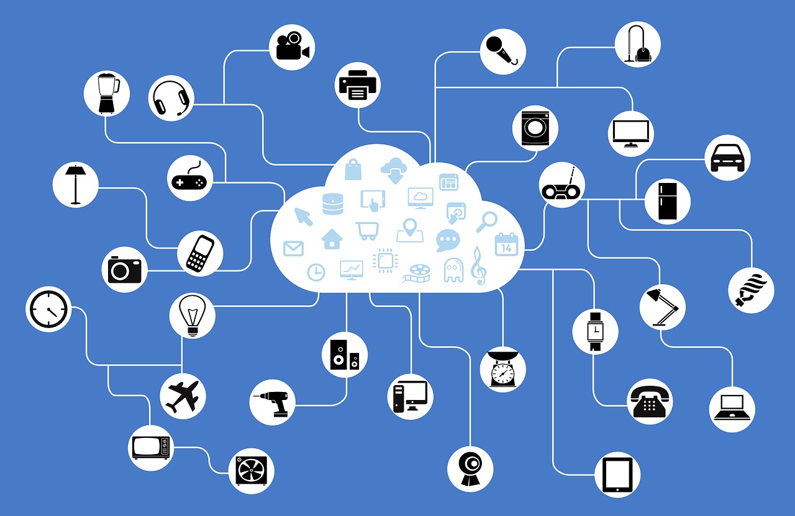
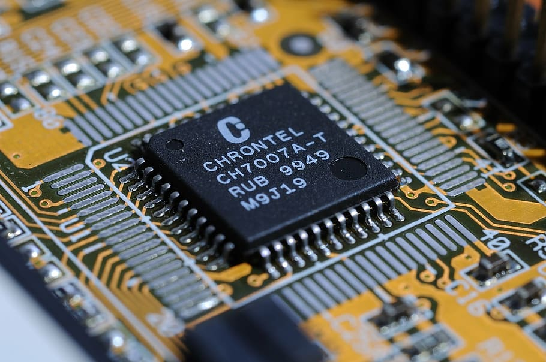
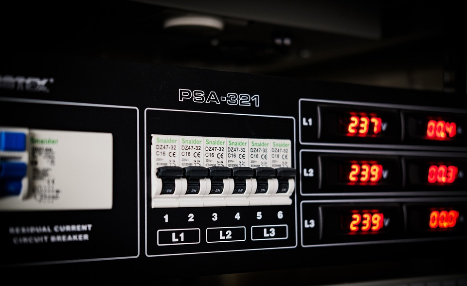
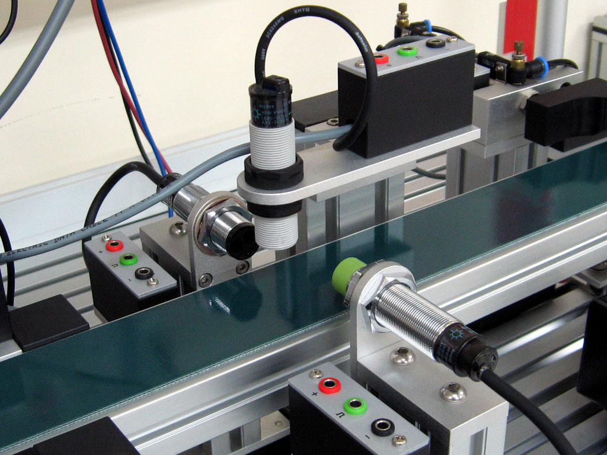
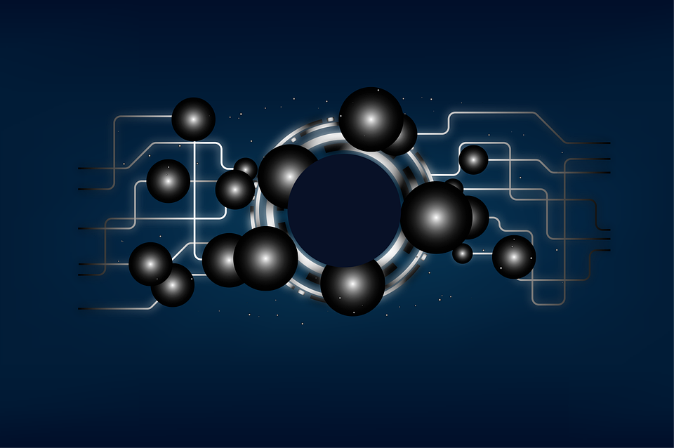

Sejarah

Istilah Ubiquitous Computing diciptakan dan diperkenalkan oleh Mark Weiser (1952-1999). Weiser
bekerja di Pusat Penelitian Xerox Palo Alto (PARC, sekarang merupakan organisasi independen). PARC
merupakan tempat lahir dari banyak perkembangan yang menandai era suatu teknologi PC, seperti mouse,
antarmuka pengguna berbasis windows, desktop, printer laser, multimedia, dan banyak lagi. Karyanya
tentang Ubiquitous Computing terus mendefinisikan semua pertimbangan teknologi dan sosiopolitik yang
melekat pada bidang tersebut. Menurut Weiser, kita dapat berbicara tentang Ubiquitous Computing
setelah empat kriteria berikut dipenuhi:
- mikrokomputer diintegrasikan ke dalam objek fisik dalam bentuk apa pun dan memindahkan layanan
yang sebelumnya dilakukan oleh sistem desktop;
- sistem tertanam ini dikarakteristikkan dengan ukurannya yang kecil dan tidak terlihat oleh
pengguna;
- mikrokomputer tertanam dengan demikian menambah nilai guna asli objek fisik dengan array baru
aplikasi digital
- ketersediaan daftar layanan di mana-mana di pusat komunikasi antara perangkat dan aplikasi,
bukan perangkat itu sendiri.
Poin terakhir inilah yang membedakan Ubiquitous Computing dari jaringan seluler yang dikenal saat
ini. Ubiquitous Computing ditandai oleh ketersediaan layanan seluler yang ada di mana-mana dan
terlepas dari platform target. Layanan akan disesuaikan dengan kapasitas fisik dari perangkat khusus
Ubiquitous Computing: Tantangan Aplikasi dan Tren Masa Depan 3, baik ponsel, PDA, atau perangkat
komunikasi nilai tambah lainnya (Weiser 1991).
Sistem Ubiquitous Computing

Ubiquitous Computing dipandang kurang sebagai bidang teknologi diskrit, tetapi lebih sebagai aplikasi
teknologi informasi dan komunikasi yang muncul yang diintegrasikan ke dalam dunia sehari-hari lebih
dari sebelumnya. Tujuannya adalah untuk memenuhi klaim "segalanya, selalu, di mana saja" untuk
pemrosesan dan transmisi data melalui keberadaan sistem TIK. Karakteristik berikut mendefinisikan
paradigma aplikasi ini:
- miniaturisasi: komponen TIK menjadi lebih kecil dan lebih mobile,
- penanaman: ketika komponen TIK diintegrasikan ke dalam objek sehari-hari, mereka mengubahnya
menjadi benda pintar,
- jaringan: komponen TIK terhubung satu sama lain dan berkomunikasi secara umum melalui radio;
karena itu mereka bukan bagian dari lingkungan atau aplikasi tetap, tetapi sebaliknya dirancang
untuk membentuk jaringan secara spontan,
- di mana-mana: sementara komponen TIK yang tertanam semakin ada di mana-mana, mereka pada saat
yang sama semakin kurang terlihat — atau bahkan tidak terlihat — bagi sebagian besar orang,
- kesesuaian konteks: Komponen TIK menggunakan sensor dan komunikasi untuk mengumpulkan informasi
tentang pengguna dan lingkungan mereka dan menyesuaikan perilaku mereka sesuai
Teknologi komunikasi dan mikroelektronika, khususnya, adalah persyaratan utama untuk hampir semua
aplikasi Ubiquitous Computing.Meskipun energi autarky jelas bukan karakteristik penting dari semua
aplikasi Ubiquitous Computing, memasok energi jelas merupakan tugasutama. Pematangan dan
ketersediaan teknologi yang relevan di mana-mana komputasi diharapkan segera, dalam satu hingga
empat tahun kedepan; hampir semua persyaratan teknologi yang diperlukan untuk Ubiquitous Computing
harus dipenuhi di masa mendatang. Masalah yang belum terselesaikan dengan catu daya, antarmuka
manusia-mesin yang tidak memadai dan kurangnya teknologi keamanan yang berfungsi dengan baik
menimbulkan hambatan serius bagi pengembangan Ubiquitous Computing. Studi lebih lanjut mengungkapkan
potensi kemacetan teknologi berikut.
- Baterai dan akumulator adalah persyaratan penting untuk Ubiquitous Computing. Pengembangan yang
cukup diperlukan pada titik ini, meskipun ketersediaan solusi saat ini. Pemanenan energi —
ekstraksi energi dari lingkungan
- Dalam antarmuka manusia-ke-mesin, memproses ucapan alami sangat penting. Meskipun merupakan
teknologi yang relatif matang, ini merupakan hambatan teknologi.
- Di bidang keamanan, identifikasi biometrik dianggap kurang relevan untuk Ubiquitous Computing,
terutama bila dibandingkan dengan teknologi keamanan lainnya seperti manajemen kepercayaan dan
manajemen identitas.
Teknologi Pendukung Ubiquitous Computing
Ubicomp bukanlah teknologi independen. Namun, Ubicomp menggambarkan
karakteristik kinerja dari suatu pendekatan untuk informasi dan komunikasi
yang tidak terlihat, ada di mana-mana, dan mulus. Oleh karena itu, objek pintar
tidak dapat dijelaskan dalam istilah universal, karena sangat tergantung pada
konteks penerapannya: objek cerdas, kecil, dan mobile. Objek cerdas dapat
diintegrasikan ke dalam rumah, atau perangkat rumah tangga dapat diubah
menjadi objek pintar dengan mengintegrasikan komponen yang sesuai.
Keragaman ini menunjukkan bahwa basis teknologi ubiquitous computing tidak
selalu sama; alih-alih, teknologi yang berbeda akan digunakan dalam setiap
kasus.
Di bidang teknologi produksi seperti litografi dan teknologi wafer,
mikroelektronika jelas penting untuk teknologi sensor juga. Faktanya, teknologi
komunikasi dan mikroelektronika adalah prasyarat terpenting untuk hampir
semua aplikasi ubiquitous computing. Diharapkan bahwa masing-masing
teknologi akan matang dan akan tersedia dalam waktu dekat, dalam jangka
waktu mulai dari sekitar satu hingga empat tahun. Di antara hambatan
potensial yang akan berdampak serius pada pengembangan Ubiquitous
Computing yang paling penting adalah: masalah yang belum terpecahkan
dengan catu daya, antarmuka manusia-mesin yang tidak memadai dan
kurangnya teknologi keamanan yang berfungsi dengan baik. Sub-bagian berikut
menjelaskan prinsip-prinsip dasar bidang teknologi individu dan signifikansinya
untuk ubiquitous computing.
Microelectronics

Mikroelektronika, teknologi yang berurusan dengan miniaturisasi,
pengembangan, pembuatan, dan penerapan sirkuit terpadu (IC) — sudah
menjadi komponen penting dalam sejumlah besar perangkat dan peralatan
teknologi yang membentuk kehidupan kontemporer. Elektronik konsumen,
industri otomotif dan teknologi medis hanyalah beberapa contoh bidang di
mana mikroelektronika memainkan peran penting. Saat ini, mikroelektronika
bekerja dengan struktur lebih kecil dari 40 nanometer. Pada tingkat
perkembangan saat ini, ini harus turun menjadi 22,5 nanometer pada tahun
2016 (Roadmap Teknologi Internasional untuk Semikonduktor 2010).
Peningkatan kepadatan sirkuit yang signifikan akan menghasilkan keuntungan
yang cukup besar dalam kapasitas fungsional untuk ukuran IC yang diberikan.
Namun, bidang mikroelektronika berjalan melawan batas fisik yang semakin
mahal untuk diatasi. Batasan ini mencakup proses pembuatan yang sangat
kompleks dan penurunan kinerja dan daya tahan karena kebocoran arus yang
tidak diinginkan di antara trek papan sirkuit yang dicetak.
Kemasan sirkuit terpadu — yaitu pemasangan dan pengikatan komponen
elektronik pada papan sirkuit tercetak (PCB) —telah mengalami perubahan
besar dalam beberapa tahun terakhir. Peningkatan kepadatan integrasi,
fungsionalitas yang lebih besar dan biaya telah mendorong perkembangan ini
(Cosine 1999). Proses pengemasan canggih, seperti chip flip, paket ukuran chip,
dan ball grid array, telah mengambil peran kunci dalam pembuatan IC. Selain
dimensi yang lebih kecil dan biaya produksi yang lebih rendah, proses ini
menawarkan keuntungan mengintegrasikan kemasan secara langsung ke
dalam proses pembuatan chip. Sejumlah perusahaan teknologi multinasional
membuat paket proses tingkat lanjut, termasuk Infineon, IBM dan Toshiba.
Tren dalam mikroelektronika adalah menuju kepadatan integrasi yang lebih
besar,struktur yang lebih kecil dan penurunan biaya unit. Integrasi sistem
berbasis PCB berkaitan dengan integrasi komponen elektronik pasif dan aktif,
lapisan fungsional, antarmuka elektro-optik dan antarmuka sensor pada PCB
atau bahkan pada tumpukan PCB. Dalam integrasi sistem di tingkat
semikonduktor, semua fungsi digital, analog dan sinyal campuran
diintegrasikan langsung ke dalam IC tunggal (system-on-chip).
Penelitian saat ini dalam nanoteknologi sedang melihat bagaimana efek
kuantum dapat digunakan pada tingkat sub-molekul dan atom untuk mencapai
miniaturisasi mikroelektronika lebih lanjut. Banyak sekali lembaga penelitian
yang mengerjakan mikroelektronika dan bidang periferalnya. Ini termasuk
berbagai lembaga seperti Institut Fraunhofer untuk Keandalan dan Mikrointegrasi di Jerman, Pusat
Elektronik Mikro Antar-universitas (IMEC) di Belgia,
Georgia Tech dan Institut Teknologi Massachusetts (MIT) di Amerika Serikat,
dan Industri Institut Penelitian Teknologi (ITRI) di Jepang. Secara keseluruhan,
mikroelektronika adalah teknologi yang matang dan banyak tersedia dan tidak
menimbulkan hambatan untuk komputasi di mana-mana. Nanoteknologi dan
elektronik polimer dianggap sebagai teknologi masa depan, tetapi karena
mereka hanya akan digunakan dalam aplikasi niche, mereka mewakili
hambatan yang signifikan.
Power Suply

Memasok daya pada dasarnya tidak menimbulkan masalah bagi aplikasi yang
terhubung ke jaringan listrik dan jaringan dengan kabel. Namun, sistem seluler
dan nirkabel dengan swasembada daya telah menjadi penting dalam beberapa
tahun terakhir. Aplikasi lama yang didukung radio mengkonsumsi banyak daya,
yang memaksa pengguna untuk sering mengganti atau mengisi ulang baterai.
Namun, baru-baru ini, konsumsi energi telah menurun karena kemajuan dalam
pembuatan IC dan pengurangan waktu aktif berbasis aplikasi untuk sensor dan
modul. Kemudian, baterai lithium-ion mulai digunakan menawarkan keandalan
yang sangat baik dan stabilitas jangka panjang. Tujuan baru adalah melakukan
tanpa baterai sama sekali. Untuk tujuan ini, akumulator miniatur (baterai
penyimpanan) akan terus diisi ulang oleh fotovoltaik, generator termo,
generator piezo miniatur atau konverter lainnya, tanpa perlu menyambungkan
ke saluran catu daya (Sabatier et al., 2006).
Dalam kasus-kasus di mana awalnya melengkapi perangkat dengan baterai
mungkin tidak mencukupi untuk seluruh layanannya, atau di mana pertukaran
baterai yang konstan menjadi tidak praktis, teknologi ideal akan
memungkinkan penyediaan energi nirkabel dan autarkik dari sumber sekitar —
yang disebut pemanenan energi. Berbagai teknologi semacam itu tersedia,
beberapa di antaranya telah diuji dalam praktik. Masing-masing harus
dipertimbangkan secara individual untuk setiap aplikasi sehubungan dengan keseimbangan energi
dan efisiensinya. Beberapa contoh diantaranya (Yang et
al., 2003).:
- generator fotovoltaik mengubah energi secara langsung
berdasarkan berbagai prinsip sel surya
- generator piezoelektrik mengubah energi mekanik menjadi energi
listrik dengan menggunakan kristal piezo khusus,
- generator termoelektrik menciptakan tegangan listrik dengan
perbedaan suhu antara dua logam yang berbeda,
- generator elektromagnetik mengubah energi sesuai dengan prinsip
dinamo yang sudah dikenal,
- generator kapasitif dan elektrostatik menggunakan muatan
kapasitif atau elektrostatik di medan listrik untuk menghasilkan
energi,
- generator termo-mekanis menghasilkan energi mekanik yang
kemudian diubah menjadi energi listrik, dan
- baterai microchannel elektro-kinetik menghasilkan listrik ketika
cairan bermuatan ion (misalnya, air garam) melewati saluran mikro
atau filter berpori, sehingga memisahkan potensi fluida. Transport
fluida didorong oleh tekanan statis atau eksternal pada fluida.
Metode Komunikasi

Menangkap dan menganalisis dunia nyata adalah salah satu karakteristik
utama dari komputasi di mana-mana. Inti dari hal ini adalah sensor sebagai
komponen elektronik yang secara kualitatif atau kuantitatif mendaftarkan
karakteristik lingkungan dan memperkuat, memproses, dan menyampaikannya
sebagai sinyal digital.
Tantangan utama dalam pengembangan sensor saat ini termasuk mengurangi
ukuran dan berat sensor dan sistem sensor, integrasi sensor ke dalam sistem
semikonduktor yang kompleks, mengurangi konsumsi daya sensor,
meningkatkan kinerja dan keandalannya, dan mengembangkan teknologi
produksi berbiaya rendah.
Salah satu fokus pekerjaan pengembangan adalah penyempurnaan teknologi
yang ada. Dalam sistem-on-chip, sensor tidak lagi diproduksi sebagai
komponen terpisah; alih-alih, ia langsung diintegrasikan ke dalam chip.
Nanoteknologi sedang mengejar pendekatan baru dengan elemen sensor yang secara dramatis lebih
kecil dan lebih sensitif pada tingkat sub-molekul atau
atom.
Teknologi sensor umumnya dianggap sebagai teknologi mapan yang tidak
menimbulkan hambatan teknis serius untuk komputasi di mana-mana.
Menariknya, penilaian ini juga berlaku untuk jaringan sensor yang sangat
terintegrasi, fungsional canggih yang, sampai hari ini, adalah topik penelitian
murni.
Teknologi Komunikasi

Teknologi komunikasi umumnya dikombinasikan dengan teknologi informasi
dan disebut secara kolektif sebagai TIK untuk menekankan tumpang tindih
antara kedua bidang. Dalam telekomunikasi — mis., Komunikasi seluler,
komunikasi satelit dan telepon, teknologi transmisi sinyal, rekayasa frekuensi
tinggi, mikroelektronika, informatika teknis, dan jaringan komunikasi. Karena
kemungkinan objek untuk berkomunikasi adalah dasar untuk visi komputasi di
mana-mana, TIK memainkan peran penting.
Institute of Electrical and Electronics Engineers (IEEE) telah menerbitkan
sejumlah standar berbeda untuk jaringan nirkabel. Standar 802.11, yang
menstandarkan jaringan area lokal nirkabel (WLAN), banyak digunakan. Untuk
transmisi jarak pendek dengan jangkauan beberapa meter, Bluetooth (IEEE
802.15.1) dengan cepat menjadi populer untuk komunikasi antar perangkat
dalam jaringan area pribadi (PAN).
Di luar solusi yang ada, sejumlah pendekatan akan menjadi penentu dalam
pengembangan lebih lanjut komunikasi seluler seperti WiMAX (802.16 e / m),
USB nirkabel, evolusi jangka panjang (LTE), dll. Di bidang produksi industri
otomatis, ada upaya untuk mengganti sistem bus lapangan yang ada dengan
Ethernet industri — Ethernet yang diperluas berdasarkan standar IEEE 802.3 —
yang akan memenuhi permintaan waktu nyata.
Para pemain yang menentukan dalam bidang TIK — terutama yang berkaitan
dengan komunikasi nirkabel — adalah penyedia telepon seluler utama seperti
Deutsche Telecom, Vodafone dan perusahaan Jepang NTT DoCoMo, pembuat
komponen jaringan seperti Cisco dan Lucent, dan pemasok perangkat digital
seperti Nokia, Motorola, Siemens, Ericsson, IBM, Intel, Microsoft, Sun dan
Toshiba. Perusahaan-perusahaan ini semakin bekerja dengan perwakilan dari organisasi standar
untuk mengembangkan solusi lengkap untuk informasi dan
komunikasi. Ahli tren teknologi dan pasar mengenali teknologi komunikasi
sebagai pendorong utama untuk komputasi di mana-mana. Namun, mereka
juga merasakan risiko tertentu dari kemacetan teknologi dalam pengembangan
lebih lanjut dari standar Internet IPv6 untuk ruang alamat tambahan, dan
Mobile IP untuk komunikasi seluler.